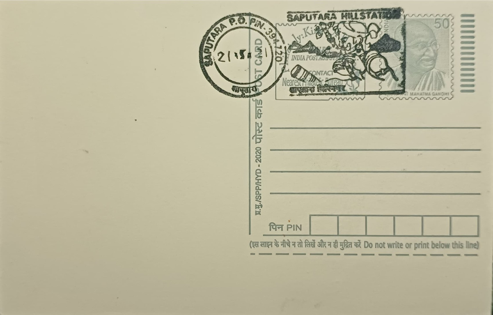

Musical Instruments of Local Tribes
સ્થાનિક આદિવાસીઓનાં વાદ્યો


The musical traditions of Dang district's tribes carry no single founding legend, as they developed organically among the Bhil, Kunbi, Warli, and Gamit communities who have inhabited these forested Sahyadri hills for centuries; their instruments are named in local Dangi dialects and built from forest materials close at hand. The pavri, also called pawari or tarpha, takes its form from cow horn, wood, and a dried bottle gourd resonator, a construction method shared with the related tarpa of the neighboring Kokna tribe across the Maharashtra border, reflecting the porous cultural boundary between the two regions rather than any single point of invention.
These instruments belong to a broader category of tribal sushir (wind) and percussion instruments documented by India's cultural heritage institutions, and their significance lies less in classical musicological pedigree than in their role as markers of adivasi identity within Gujarat's cultural landscape. The pavri is specifically classified as a double-reed hornpipe under the sushir vadya grouping used by the Indian Culture portal and the National Virtual Library of India, distinguishing it from mainstream Gujarati folk instrumentation. Alongside the pavri, instruments such as the kahalia, tadpur, tingri, kahel, tarpu, nal dholak, change dhol, nagri, and kikri together constitute a distinctive regional ensemble rarely catalogued outside specialist tribal-heritage archives.
Physically, the pavri is generally three to four feet in length, fashioned with six finger holes toward its lower end and a double-reed mouthpiece, producing a nasal, droning tone suited to accompanying sustained group dance rather than melodic solo performance. No single named craftsman or historical workshop is credited with its development, since instrument-making has traditionally been a household or community skill passed between generations of players rather than a commercial trade, with gourd, horn, and local wood sourced directly from the surrounding forest tracts that give Dang its name and ecological character.
The clearest showcase for these instruments remains the Dangs Darbar, an annual durbar held at Ahwa, the district headquarters, in the days preceding Holi. The gathering traces its administrative origin to an 1842 agreement following Colonel James Outram's 1830 settlement with Bhil chieftains, under which the British Raj committed to an annual payment to the Dang kings in exchange for forest rights, a political pension the Government of India has continued to disburse each year since, independent of the broader abolition of princely privy purses in 1970. Tribal dancers, bands, and decorated processions accompany the chiefs' ceremonial collection of this payment, making the music inseparable from this unusual surviving piece of colonial-era administrative ritual.
Today the instruments themselves are preserved and displayed at the Saputara Tribal Museum, a government-run institution near the hill station that holds traditional ornaments, wooden carvings, masks, and musical instruments of the Dangi tribes alongside its better-known Warli art collection, serving students, researchers, and tourists visiting Saputara. Practitioners able to play instruments like the pavri have become few, a decline noted by researchers documenting the craft in recent years even as cultural tourism around Saputara and the Dangs Darbar festival gives these sounds an occasional public stage, leaving the museum's gallery and the annual Ahwa gathering as the two settings where the instruments are still reliably encountered intact.
| Date of Introduction | March 27, 1984 |
|---|---|
| Address | Sub Postmaster, |
| Saputara SO, | |
| Dang (dt.), Gujarat - 394720. |